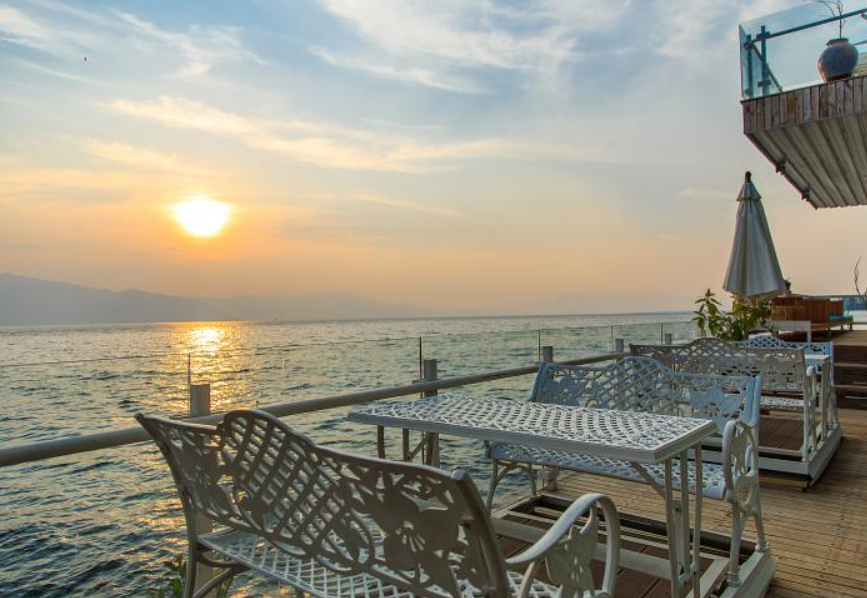

洱海早在汉代它已名载史册。公元前122年，张骞出使西域回到长安，在向汉武帝汇报西域情况时，他说在大夏国(今阿富汗)曾看到蜀布，经了解是从身毒(印度)贩运去的。他极力进言：从蜀郡通身毒，道路近便，有利无害。根据张骞的建议，汉武帝派使者到西南夷寻求通身毒之路。道路都为洱海附近的昆明族所阻，最终未能通身毒。公元前120年，汉武帝因使者阻于昆明族之事，征调人力在首都长安开挖了一个人工湖，名之为“昆明湖”，训练水军，准备征讨洱海地区的昆明族。当然，汉武帝征服云南高原其在长安“昆明湖”训练的水军不可能派上用场。但是，这段“汉习楼船”的典故却永留在司马迁的《史记》中。后来，清朝乾隆皇帝因景仰汉武帝开疆拓土的功业，把北京颐和园西湖也改名为“昆明湖”。
景点概况
昆明：
昆明云南省的省会，四季如春，风景优美，著名的滇池碧波渺渺，登山西山俯瞰，整个滇池尽收眼底，每年春天，圆通山、云南大学等地的樱花落樱缤纷，无数西伯利亚飞来的红嘴鸥在昆明上空徘徊，人们纷纷前往翠湖公园观赏这些美丽的精灵
丽江：
这座历史悠久的古镇有着很多风景名胜，是纳西族人的主要聚居地，动人的纳西古乐、灵动温婉的玉龙雪山、美丽的束河、徒步天堂虎跳峡都在这里，也是中国著名古镇之一
大理：
是云南最早文化的发祥地，有着辉煌灿烂的历史和文化，主要为白族聚居地，风花雪月是大理著名四景，洱海、苍山、双廊、喜洲是必游之地，另外还有、崇圣寺、蝴蝶泉等著名景点
必游景点TOP5

洱海
丽江
丽江植物资源种类繁多，成为中国著名的植物保护基地之一，是云南省重点林区之一，2015年，全市林业用地面积163万公顷，占土地面积的79.36%，森林覆盖率为66.15%，活立木蓄积量1.05亿立方米。境内有植物1.3万多种，仅种子植物就多达2988种，热带、温带、寒带植物均有分布，有许多树种属国家珍稀植物，有珍稀植物云南铁杉、红豆杉、榧木、水青树等。已发现中药材2000多种，占国家药典所列品种1/3以上。 动物资源丰富。共有兽类8目21科83种，占云南兽类种数的30%；有鸟类17目46科290多种，占云南鸟类种数的37.6%，有国家重点保护的珍稀濒危动物滇金丝猴、云豹、金豹、雪豹、猕猴、小熊猫及宁蒗泸沽湖特有的裂腹鱼等。有大量的珍贵蝴蝶资源。程海有鱼类29个品种，隶属9科12属，土著鱼类17种，即杞麓鲤，西昌白鱼，蒙古红，中华倒刺鲅，圆吻鲴，高背鲫等。年渔业产量2200吨。程海是世界上3个盛产天然螺旋藻的湖泊之一。
雪山
以雪山主峰为中心，共有八个圈谷构造环绕，其中规模最大的为一号圈谷，位于雪山主峰与北棱角下，开口朝向东方，长约1000米，最宽处约600米，不仅规模最大，形状也完整。二号圈谷位于北棱角北侧，规模稍小，但所在位置更高[1]。四号圈谷位于主峰与北棱角间的垭口北面，为堆满巨石块的石流坡；七号圈谷则位于雪山主峰西北坡下，为翠池的函水区。除了雪山地区之外，在南湖大山、大霸尖山、玉山等台湾山区亦可见类似的地形结构。最早关于台湾高山圈谷研究的文献出自日籍学者早扳一郎；其后博物学家鹿野忠雄经多次考察，发表台湾高山圈谷为冰河遗迹地形的论文，引发关于圈谷成因的学术论战。有论者认为，台湾高山地区是否曾有的冰河，证据并不充分，而所谓圈谷其实是水系发育、向源侵蚀与风化作用所造成的崩谷地形。其后由于一度缺乏实地研究，圈谷地型的确实成因陷入多方争议而无定论。

束河
民居是束河古镇建筑群极为重要的组成部分，三坊一照壁是纳西族民居典型的构造布局，小院种花，大院植树，四季花果飘香，有甚者引水入院，蓄水成池，配以亭台，就成了一幅雅致的风景。现在古镇内的民居多修缉为客栈，在保留当地木材结构的基础上，又配以玻璃材质，从而大大提高了房间的采光度，使得住宿更为舒适。三坊一照壁的代表客栈有自在香客栈，进门为前院和照壁，中间为大厅，后面是大院，大厅侧面各有一小院，形成了“横三竖三”的布局。亭台加水景点缀的代表客栈有云山美地云美店，店内除了保留原空地上的树之外，还修了八卦池养鱼，配以亭台做为过渡，突出了大庭院景观。在木材基础上大量使用玻璃使其自成一景的代表客栈有伽叶会馆，玻璃、吊花、水景，巧妙精致，如同玻璃花园。
泸沽湖
泸沽湖是中国第三深的淡水湖，湖泊略呈北西一东南走向，南北长9.5公里，东西宽5.2公里，湖岸线长约44公里，四川部分20公里。湖泊面积50.1平方公里，其中四川部分31.2平方公里。湖泊集水面积247.6平方公里，四川部分140.6平方公里。泸沽湖最大水深105.3米，水深超过50米的湖区约占全湖面积的一半，平均水深为40.3米，湖水库容量为22.52亿立方米，湖水最大透明度达12米，湖面海拔2685米。 泸沽湖在行政区划上，隶属四川省盐源县和云南省宁蒗县共同管辖，其中四川省盐源县管辖东部的29.6平方公里（含沼泽湿地5.8平方公里），云南省宁蒗县管辖西部的27.0平方公里。泸沽湖中有5个全岛，4个半岛，一个长岛，14个湖湾，湖中散布5个全岛、3个半岛、1个海堤连岛，一般高出水面15至30公尺，湖周群山环抱，格姆女神山高踞湖畔，后龙山楔入湖心，构成形如马蹄的泸沽湖。